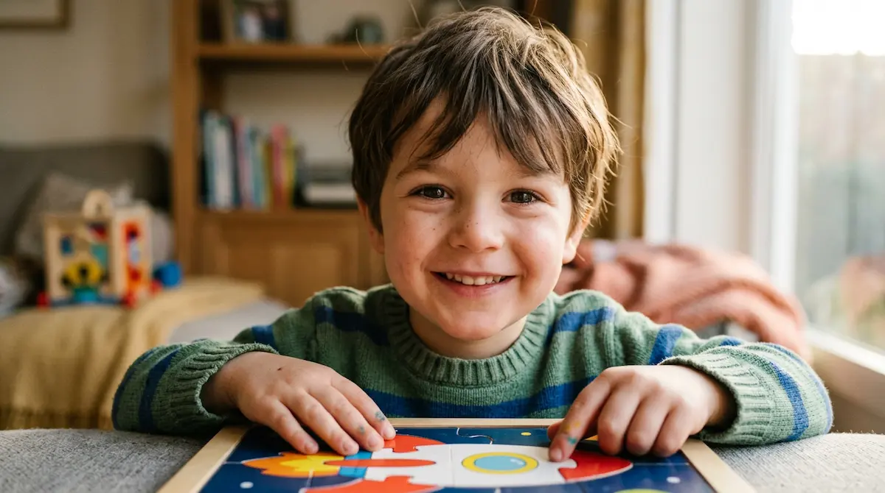

Autonomía y autoestima positiva: cultivando su seguridad
Crecer dentro del espectro autista implica a menudo enfrentarse a un entorno diseñado bajo parámetros mayoritarios que no siempre contemplan sus necesidades. Este desajuste cotidiano puede minar la confianza del menor, haciéndole sentir que se equivoca constantemente al intentar encajar. Proteger y cimentar una autoestima sólida resulta imprescindible para que se reconozcan valiosos, seguros y orgullosos de su propia identidad.
Desplazar el foco de la dificultad hacia sus grandes fortalezas
El autismo no define la totalidad de la persona; suele venir acompañado de cualidades extraordinarias como una profunda honestidad, una memoria visual excepcional, una capacidad de concentración detallada o una pasión genuina por sus intereses. Reconocer y valorar estas fortalezas equilibra el esfuerzo diario que el niño realiza para desenvolverse en un mundo saturado de estímulos.
"Una autoestima sólida no nace de la ausencia de dificultades, sino de la certeza absoluta de que su forma de ser es amada y respetada tal como es."
Fomentar la independencia paso a paso
La sobreprotección, aunque brote del deseo de evitarles sufrimientos, puede restarles oportunidades de experimentar el éxito personal. Impulsar su autonomía requiere estructurar caminos accesibles:
1. Asignar responsabilidades visuales: Conectar las pequeñas tareas del hogar a rutinas claras y predecibles les otorga un papel competente y útil dentro de la familia.
2. Celebrar cada conquista cotidiana: Reconocer de forma sincera su esfuerzo al superar un reto sensorial o de adaptación refuerza su seguridad y estimula su confianza interior.
Creciendo hacia el futuro con alas firmes
A medida que crecen, guiarles hacia la gestión de sus propias herramientas les otorga una valiosa independencia emocional. Con un entorno que acoge sus diferencias con afecto incondicional y celebra sus logros, el niño transita su infancia sabiendo que cuenta con el apoyo necesario para cumplir sus metas con total seguridad.
➔ Volver al índice de Autismo (TEA)